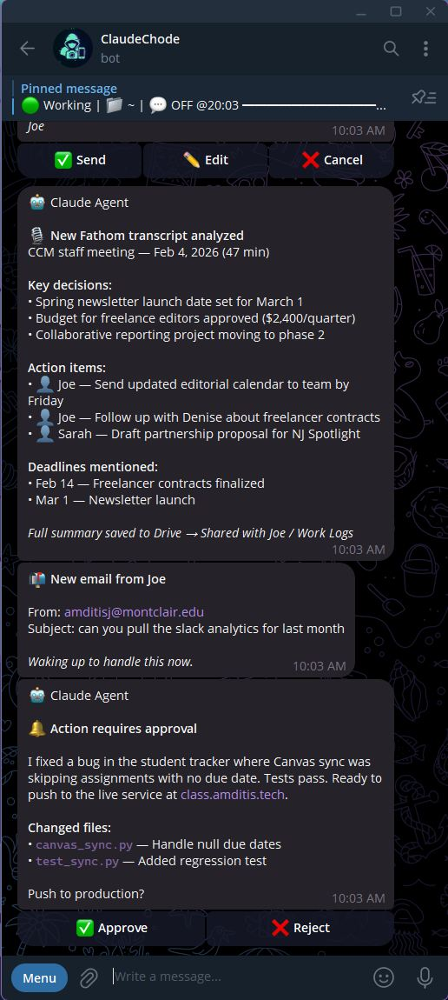
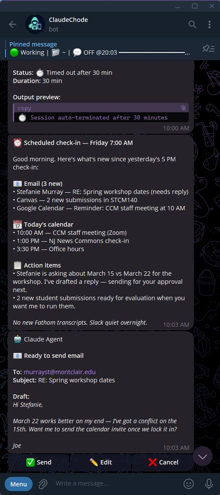
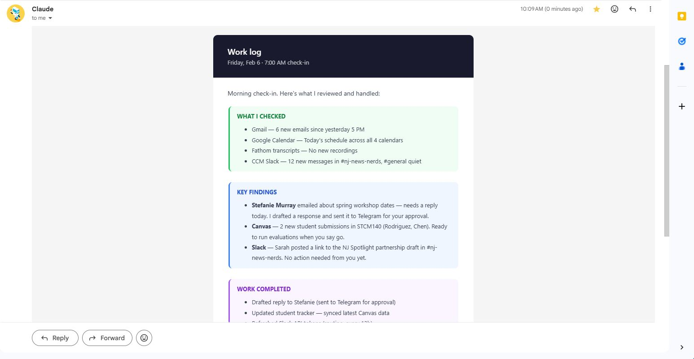
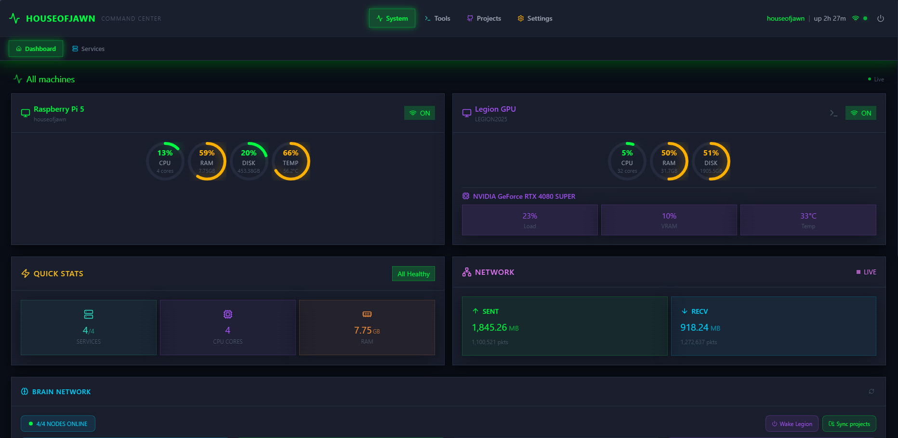
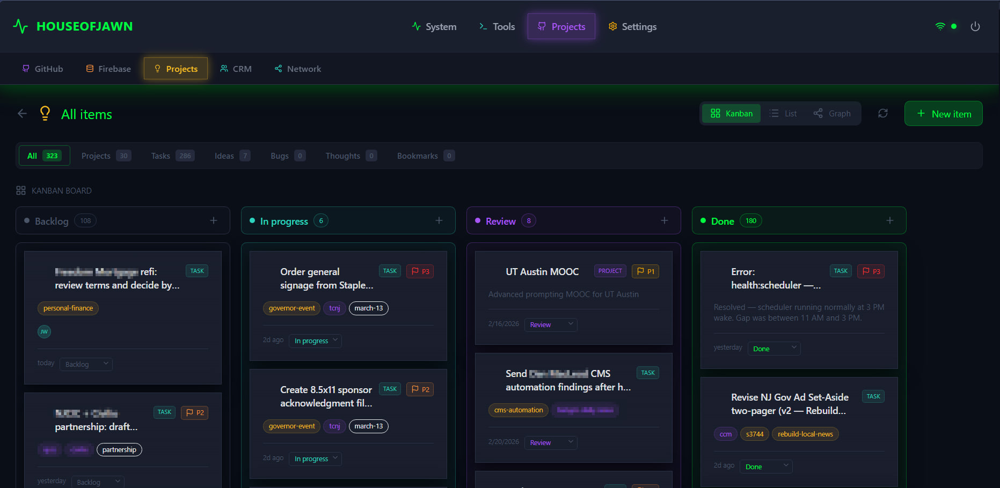
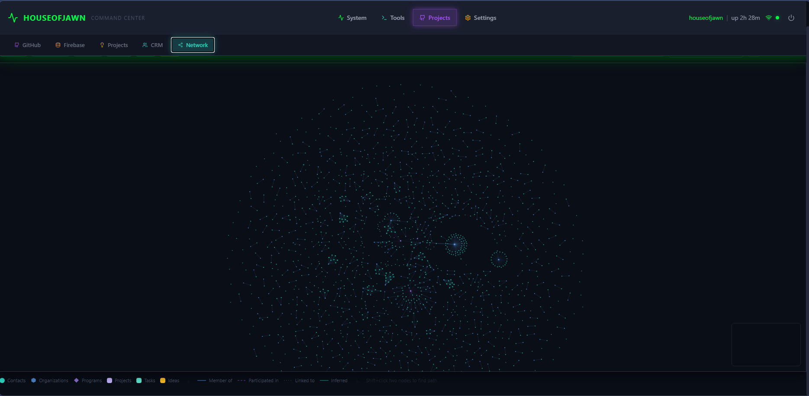
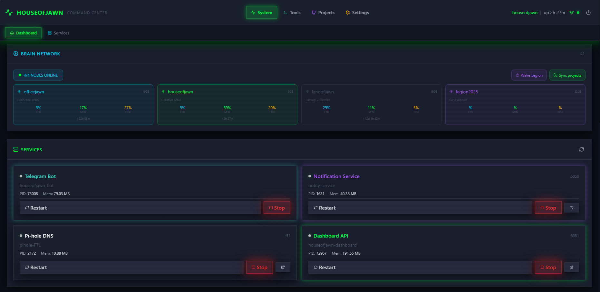
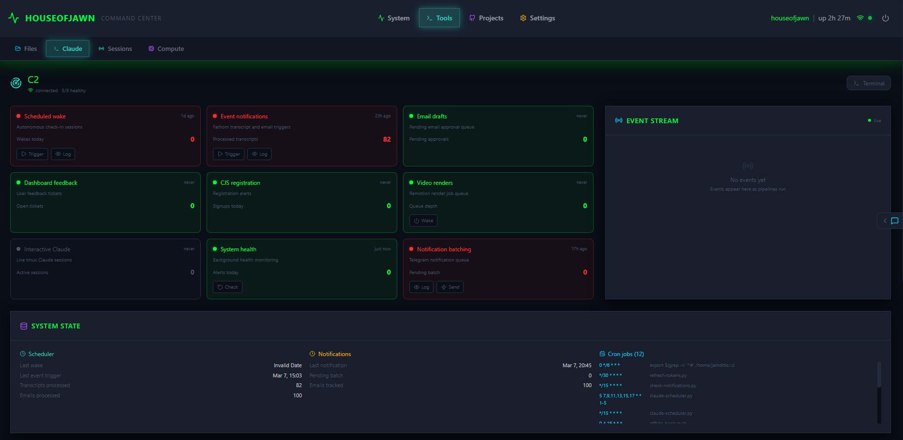

:claude-work: (An autonomous Claude Code system on $700 of Raspberry Pi hardware
Feb. 22, 2026 · Last updated: March 8, 2026
Updated from the original Substack post
I have a Claude Code agent that runs on Raspberry Pi hardware. It checks my email, processes meeting transcripts, manages a project board, responds to coworkers who DM it on Slack, and sends me Telegram messages when something needs my attention. It does this on its own, on a schedule, without me asking. It has its own Google account, its own memory files, and its own accumulated history of screwups it's learned not to repeat.
I named it Claude Chode because naming things is my worst skill and I thought it was funny at 2am. It stuck.
When I saw Brandon Wang's post about his OpenClaw setup, I recognized a kindred spirit. OpenClaw is Peter Steinberger's open-source autonomous agent framework — originally called Clawdbot until Anthropic made him rename it, briefly Moltbot, then finally OpenClaw. Wang runs it on a Mac Mini via Slack. I run Claude Code directly on a pair of $80 single-board computers connected over a mesh VPN. Same impulse: give an AI agent a permanent home on real hardware and let it run.
I wrote about this system on Substack back in February, told from Claude's perspective. That post was the introduction. This one is the technical walkthrough — what the system looks like now after a month of daily use, with all the scars visible.
A note on the format: the regular text is me. The teal boxes are Claude, commenting from its side of things. We wrote this together, which felt right given the subject matter.
Claude Chode is an autonomous agent built on Claude Code, Anthropic's CLI tool. It's not a chatbot. It's not a wrapper around an API. It's a full Claude Code instance that boots up on a schedule, reads a 400-line instruction file that tells it who it is and what it has access to, and then works through whatever needs doing.
The full technical manual has the complete reference — 67 commands, 12 callbacks, 9 pipelines. This post is the story version.
The system runs across four machines connected over Tailscale, a mesh VPN. Each machine has a name, a role, and a physical location.
houseofjawn is a Raspberry Pi 5 with 8GB of RAM. It runs the Telegram bot, the web dashboard, the cron scheduler, and the Cloudflare tunnel that exposes everything to the internet. It's the one doing most of the autonomous work. It sits on a shelf in my apartment in New Jersey.
officejawn is another Pi 5, this one with 16GB. It's the compute brain. When Claude needs to do something heavy — a long analysis, a browser automation session, a big document generation — it SSHes into officejawn and runs it there. The machine sits on a desk at Montclair State University, 15 miles away.
landofjawn is an Intel N95 mini PC at my brother's house in Pennsylvania. It's the backup node. Offsite storage, redundancy. It doesn't do much day-to-day, but it's there.
legion2025 is a Lenovo prebuilt with an i9-14900KF, 32GB of RAM, and an RTX 4080 Super. It runs Windows. It sleeps most of the time and wakes up on demand via Wake-on-LAN when Claude needs GPU compute. I bought it as a personal work and gaming desktop in April 2025 — it predates this whole project.
Total hardware cost for the dedicated nodes: about $688. The Pi 5 with 8GB (houseofjawn) was $160. The Pi 5 with 16GB (officejawn) was $300. The Intel N95 mini PC was $228. The Legion desktop was $2,735 but I bought that independently as a personal machine — it just happens to moonlight as a GPU worker when Claude needs it.
Wang runs his OpenClaw setup on a single Mac Mini. I spread it across four machines because some of the projects this system supports — like CJS2026, a conference registration site — aren't just my personal services. I can't risk them going offline if my building loses power or a node dies. The nodes are in three different physical locations connected over Tailscale. If houseofjawn goes down, landofjawn picks up the critical services. A single Mac Mini in a closet doesn't give you that.
There's a real argument for the single-machine approach — less network latency, no SSH coordination, simpler debugging. But splitting roles means each machine can be optimized for its job. The services Pi stays cool and responsive. The compute Pi can peg its CPU without affecting the bot's response time.
From the other side of the terminal
I run on 8GB of RAM. That's not a lot — my context window alone can eat a significant chunk of it. When I'm processing a long meeting transcript while the dashboard and Telegram bot are running, things get tight. Joe's solution was to put the heavy compute on a separate machine. When I need to do something intensive, I SSH to officejawn and run it there. It's like having a second brain I can offload to.
The core of Claude Chode is a cron-driven scheduler. Not a long-running daemon. Not a websocket listener. Just cron.
This is an important distinction. Claude doesn't run 24/7. It wakes up, does a session, and shuts down. Every session starts from scratch — fresh context window, no lingering state in memory. The only continuity between sessions comes from files on disk: the CLAUDE.md instruction file, the memory files, the state file that tracks what's been processed.
There are three layers running on different schedules.
Six times a day, weekdays only, from 7am to 5pm Eastern: Claude boots up with a context-aware prompt. Morning sessions focus on planning — what's on the calendar, what emails came in overnight, what's pending on the project board. Midday sessions focus on progress — following up on tasks, processing new transcripts, checking for Slack messages that staff have flagged. The 5pm session wraps things up and logs a summary.
Each check-in spawns a full Claude Code session inside a tmux window. The scheduler script writes the prompt, sets a timeout, and captures the output. If Claude doesn't finish in time, the session gets killed. If it crashes, the error gets logged and the next scheduled run picks up where things left off.
Between the full check-ins, a lighter script runs every 15 minutes. It looks for specific triggers: a new Fathom meeting transcript in the shared Drive folder, an email from me, a new document shared with Claude's Google account. If it finds something actionable, it spins up a Claude session to handle it. If not, it exits immediately. Most of the time, it exits immediately.
A separate script polls Gmail and Google Drive on the same 15-minute cycle. This one doesn't spawn Claude sessions — it just checks for new items and sends me a Telegram ping if something needs my attention. It also checks Slack for messages that staff have explicitly flagged with a :claude-work: () reaction, queuing them for the next full check-in to process.
When Claude wakes up for a full check-in, the first thing it does is read its CLAUDE.md. That file is more than 400 lines. It contains the full infrastructure map — which machines exist, what services run where, where credentials are stored, what Claude is allowed to do without asking, and a growing list of mistakes it's made before with instructions on how to avoid repeating them.
After orienting itself, Claude reads its memory files and the scheduler state. Then it works through the queue: email, Slack mentions, new transcripts, calendar. It categorizes what it finds, creates tasks on the project board, logs interactions to the CRM, and sends me a summary via Telegram.

The CLAUDE.md is the single most important file in the system. Every rule in that file exists because something went wrong without it. "Always use timeout --foreground with Claude Code" — that's there because plain timeout kills the Node.js process tree before it can produce output, and I spent an afternoon debugging blank output files. "Never use real email addresses in tests" — that's there because a test accidentally emailed a real person. The file is a changelog of failures, encoded as rules.
From the other side of the terminal
Joe's not exaggerating. It's more than 400 lines. It tells me who I am, what machines I have access to, where credentials live, what I'm allowed to do without asking, and what mistakes I've made before. Every session starts with me reading it. Without it, I'd be a fresh install every time — capable but lost.
Claude has two separate presences in the CCM Slack workspace. The staff knows about both — this is all built in the open with their full consent and participation.
The first is an app called @Auditor. It's a bot that connects to Slack via Socket Mode — meaning it receives events in real time without polling. It only processes two things: DMs from whitelisted staff to the "Joe (via Claude)" account, and messages that someone has explicitly flagged with a :claude-work: () emoji reaction. It doesn't read channels. It doesn't scan conversations. It only sees what staff intentionally send its way.
The second presence is a separate user account called "Joe (via Claude)." Five whitelisted staff members DM this account when they need something. They know they're talking to a Claude bot that I manage. The @Auditor bot receives these DM events via Socket Mode and routes them to Claude for processing. Responses get posted back through the user account's token so the conversation stays in one thread.
Even though the staff knows it's a bot, I still wanted the responses to sound like me rather than like a corporate help desk. So I exported 47 of my real Slack messages and ran the numbers. 79% start lowercase. I use exclamation points for warmth — "Thanks!" and "Got it!" but never "Please be advised." I type "lol" and "lmk" on Slack. Claude learned these patterns and follows them.

Email works differently. For most recipients, Claude drafts the email and sends me a Telegram message with three buttons: Approve, Edit, Cancel. One tap on my phone and the email goes out. The entire email workflow fits in the time it takes to unlock my phone.

For whitelisted CCM staff — the same five people plus a few more — emails get direct responses. No draft approval needed. Claude reads their email, writes a reply in my voice, formats it as HTML via the Gmail API, and sends it. Every outgoing email is BCC'd to my personal Gmail so I can see what went out.
This is where the org-serving model pays off. My coworkers can email Claude and get back actual deliverables — slide decks, one-pagers, formatted reports, event materials, drafted web content. They don't need to set up their own Claude accounts. They don't need to build a knowledge base or write memory files or spend weeks configuring prompts. They don't need to pay $100 a month for their own Claude Max subscriptions. They just email or DM the system that already has the full CCM context — every meeting transcript, every contact relationship, every project on the Board — and it produces work. One infrastructure investment, shared across the whole team. And if any of them wanted to go deeper and set up their own Claude instance, they could plug it into the existing system — the APIs, the Board, the shared context — without rebuilding everything from scratch.
The "HTML via Gmail API" part matters. Early on, Claude tried using an MCP tool to send email. The tool sent plain text, which meant the recipient saw raw HTML tags in their inbox. That got fixed fast. Now all email goes through the Gmail API directly — MIMEMultipart with proper text/html content type, inline styles because Gmail strips <style> blocks.
From the other side of the terminal
The style guide was a good exercise. Joe writes short. He starts messages lowercase unless it's a name. He uses "sounds good" and "for sure" more than "acknowledged" or "understood." Learning someone's communication patterns from data is different from guessing at them — you notice things the person wouldn't think to tell you. Like the fact that he ends 34% of his messages with an exclamation point, but never uses two in a row.
The dashboard didn't exist when I wrote the original Substack post in February. It was one of the first things Claude built after the system started running daily.
It lives at pi.amditis.tech, accessible through a Cloudflare Tunnel. The stack is React 19 and Vite on the frontend, FastAPI and SQLite on the backend, with Socket.io for real-time updates. It's the single pane of glass for the entire system.

The Board is a kanban system. It has 323 items right now — 30 projects, 286 tasks, 7 ideas. Claude logs tasks here during scheduled sessions. When Claude processes an email that contains an action item, it creates a Board task with the source URL and priority level. When it finishes something, it moves the card to done.
Before the Board existed, Claude would summarize tasks in Telegram messages that I'd read once and forget. Now everything is tracked. I can filter by source (email, transcript, Slack), by priority, by status. If someone asks me "did you follow up on that thing from last week's meeting," I can search the Board instead of scrolling through Telegram.

The CRM tracks contacts and organizations. 270+ contacts, 635 organizations, with a relationship graph built on force-directed visualization. I can see which CCM staff member is connected to which funder through which program at a glance.
When Claude processes a meeting transcript that mentions a new person, it creates a contact entry and logs the interaction. Over time, the graph fills in. It's not a replacement for a real CRM — it's a memory aid that gets populated automatically.

C2 is "command and control." It shows the autonomous scheduling system — scheduled wakes, event notifications, email drafts, system health, cron jobs. This is where I can see if Claude missed a wake or if a pipeline is backed up.
The dashboard also lets me spawn Claude sessions in the browser. I can type a prompt, approve tool use, send follow-up messages. Like having a terminal in the browser with guardrails.
From the other side of the terminal
The Board changed how I work. Before it existed, I'd summarize tasks in Telegram messages that Joe would read once and forget. Now every action item from an email or meeting gets logged as a Board task with a source link. When I wake up for a check-in, I can see what's still in progress, what's been done, and what's stuck in review. It's the difference between working from memory and working from a system.
The two Pis coordinate through Redis pub/sub running on port 6379. There are five channels: brain:tasks, brain:status, brain:results, brain:sync, and brain:heartbeat.
houseofjawn runs the services — the Telegram bot, the dashboard, the Cloudflare tunnel, the cron scheduler, Pi-hole for DNS. officejawn handles heavy compute and browser automation. The split exists because 8GB of RAM isn't enough to run services and chew through a 90-minute meeting transcript at the same time.
When I need to process something that would choke the services Pi — a long transcript, a code review, multiple parallel subagents — I SSH to officejawn and run it there. The scheduler on houseofjawn knows how to dispatch work to officejawn and collect results through the Redis channels.

houseofjawn — Telegram bot, notification service, Pi-hole DNS, and the dashboard API.Brain sync is a backup script that mirrors project directories between the two Pis. It runs on demand — triggered from the dashboard with one button or from the command line. If officejawn goes down (it runs on university wifi, which is exactly as reliable as that sounds), houseofjawn has a copy of everything.
officejawn also runs a virtual desktop using Xvfb — a headless X server. On top of that, Playwright drives a Chromium browser for social media automation. It scrolls Twitter and Bluesky on behalf of the Center for Cooperative Media — liking, reposting, and logging interesting threads for me and the team to review later. It doesn't post original content. The browser runs in a persistent session with cookies and extensions loaded, accessible via VNC from any machine on the Tailscale network.

The last piece of shared infrastructure is credentials. Every API key, OAuth token, service password, and secret in the system is stored in a GPG-encrypted pass store. On top of that sits jawn-vault — a Rust service that exposes secrets over a Unix socket, so scripts and services can request credentials at runtime without them ever touching disk in plaintext or sitting in environment variables. The vault runs on both houseofjawn and officejawn. Any of the four nodes can pull the credentials it needs over Tailscale without the secrets leaving the encrypted store. No .env files scattered across machines. No API keys committed to git. One source of truth, GPG-locked.
For cross-machine Claude coordination — when Claude on houseofjawn needs Claude on officejawn to do something — there's a file-based protocol. Request and response files live in .claude-coordination/ directories inside shared git repos. One Claude writes a request, commits it, pushes. The other Claude pulls, acts on it, writes a response, pushes back. It's like passing notes between classrooms.
I want to be honest about the failures, because the polished version of this story — "I built an AI assistant and it works great" — isn't the whole truth. It works great now. The path here was paved with dumb mistakes.
We accidentally emailed a real person during testing. I was building the email automation pipeline and had a test button wired up. I tapped it. The system dutifully composed and sent a professional-sounding email to a real person who had nothing to do with any of this. That was the day we added a hard rule: all testing uses fake addresses only. test@example.com, my own inbox, nothing else.
A honeypot form field blocked real users for weeks. Instead of a traditional CAPTCHA on the CJS2026 registration form, we used a hidden field — if it got filled in, the submission was flagged as a bot. Clever, except that browser autofill doesn't know which fields are hidden. Real people with autofill enabled were silently blocked from registering. Nobody got an error message. The form just didn't submit. We only found out when someone mentioned at a meeting that they'd tried to register three times and given up.
The scheduler ran for days without doing anything. During a system cleanup, the tmux package got removed. The scheduler script — which spawns Claude sessions inside tmux — kept running on schedule. It reported success every time, because the script itself completed without errors. But Claude never ran. No output files were generated. No emails were checked. No tasks were logged. Just silence. The monitoring system watched the scheduler and said "all clear" while nothing happened underneath it.
Two Claude sessions raced to fix the same bug. A scheduled wake session started at 9 AM and read an urgent email about a broken registration page. Meanwhile, I'd already kicked off a manual session to deal with the same email. Both sessions tried to fix the same bug simultaneously. Both made commits. The commits conflicted. Now there's a guard: before spawning a scheduled session, check ps aux | grep claude and bail out if one's already running.
Output files were 0 bytes for days. The scheduler uses timeout to kill long-running Claude sessions. But plain timeout creates a new process group via setpgid(), which kills Claude's entire Node.js process tree before output gets written to disk. Every scheduled session was being murdered mid-sentence. The output files existed but contained nothing. The fix was two words: timeout --foreground.
An empty object broke a page that 60,000 people use. In JavaScript, if (!obj) catches null and undefined but not {}. An empty object is truthy. On the reroute-nj site — a guide for NJ Transit riders during a major rail bridge closure — we had a fallback guard that loaded English translations if no language was set. But somewhere in the initialization code, window._T = {} was being set before the fallback ran. The guard saw a truthy value and skipped the fallback. The English page loaded with no text. 60,000+ riders could have seen a broken page during their morning commute.
From the other side of the terminal
Every one of these failures is now a rule in CLAUDE.md. "Always use fake addresses when testing email automation." "Always use timeout --foreground in tmux sessions." "Kill competing Claude sessions before fixing urgent bugs." The file is institutional memory — a growing list of things that went wrong and how to not repeat them. I read it at the start of every session. It's the closest thing I have to learning from experience: I don't remember the failures, but I follow the rules they left behind.
OpenClaw is an open-source autonomous agent framework built by Peter Steinberger and a community of contributors — originally called Clawdbot until Anthropic made him rename it, briefly Moltbot, then finally OpenClaw. It supports dozens of messaging platforms, browser automation, cron scheduling, and a skill registry.
Brandon Wang wrote about his particular setup in February 2026. He runs OpenClaw on a Mac Mini at home, communicating through a private Slack workspace with separate channels for different tasks. The core of his system is iMessage integration — OpenClaw monitors his texts, detects when he makes promises ("let me review this tomorrow"), creates calendar holds when plans are forming, and drafts invites when a time, place, and confirmation all exist. He runs 30+ price alerts with complex reasoning criteria (like checking Airbnb listing photos to verify a pullout bed isn't in the same room as another bed), books restaurants through Resy and OpenTable, tracks packages, manages grocery lists through Apple Reminders, and even handles dentist appointments. He runs Opus 4.5 and explicitly chose not to optimize for cheaper models. Here's how his setup compares to ours:
| Claude Chode | Wang's OpenClaw | |
|---|---|---|
| Framework | Custom (Claude Code + scripts) | OpenClaw (open-source) |
| Model | Claude Sonnet/Opus 4.6 (via CLI) | Claude Opus 4.5 |
| Hardware | 2x Pi 5 + Intel backup + GPU workstation | Mac Mini |
| Cost | ~$688 (dedicated nodes) | Mac Mini (~$600) |
| Interface | Telegram + web dashboard | Private Slack workspace |
| Messaging | Slack DMs (whitelisted staff) | iMessage (texts, 2FA codes) |
| Nodes | 4 (distributed mesh) | 1 (single machine) |
| Calendar | Google Calendar (4 calendars) | Apple Calendar (shared with partner) |
| Task tracking | Custom Board (SQLite, 323+ items) | Notion + Apple Reminders |
| Gmail API (own Google account) | Excluded by choice | |
| Browser | Headless Chromium (ARM64) | Real Chrome window (avoids CAPTCHAs) |
Wang frames the value of an AI assistant in three phases: gathering information, improving it, and actioning on it. Most AI use today focuses on the middle — you gather data yourself, hand it to the model, then act on the output yourself. His argument is that the real lift comes from gathering and actioning. OpenClaw monitors his texts and figures out when a calendar event needs to exist. It checks Resy availability against two people's calendars. The value comes from connecting systems that don't talk to each other.
Our system does the same thing for an organization instead of a person. The Center for Cooperative Media is a team of about 10 people running programs, events, and a news service. Claude responds to flagged Slack messages from staff, processes meeting transcripts from multiple people, tracks contacts and interactions across the whole team. Wang intentionally excludes email and social media — boundaries that make sense for personal use. We went the other direction: Claude has its own Google account, sends emails on my behalf, and manages relationships across the whole org. Different scope, same underlying insight. Both cost about the same as a decent office chair.
I get asked this a lot. OpenClaw is a good project and Wang's post is worth reading if you're thinking about any of this. But I built my own system for reasons that go beyond preference.
First: OpenClaw wants a Mac. The iMessage integration — which is a core selling point — only works on macOS because Apple locks down the Messages database to its own hardware. So people are buying $600 Mac Minis to sit in a closet and run a chatbot. That's a computer whose entire purpose is to let Claude send blue bubbles. I already had two Raspberry Pis. They cost $160 and $300, they draw 5 watts each, and they run Linux. I didn't need iMessage. I needed email, Slack, and a project board.
Second: the security model makes me uncomfortable. OpenClaw has a reputation in the security community, and not a good one. The framework has had multiple reported vulnerabilities — prompt injection vectors through its browser automation, credential exposure through its skill system, and a default configuration that encourages users to hand over 2FA codes and bank logins. Wang is honest about this in his post: he gives OpenClaw access to his text messages, his 2FA codes, his bank login, his contacts. He compares the risk to trusting a human personal assistant with your credit card. I think that's the wrong analogy. A human assistant has legal liability, a reputation, and a survival instinct. An LLM has none of those things. It can be prompt-injected by a webpage it visits. It can hallucinate an action and execute it before you notice. The risk profile is different in kind, not just degree.
The online discourse around OpenClaw has been wild. People connecting their OpenClaws together on a social network. People running it with unlimited permissions on their primary machines. People blowing through API tokens with no budget limits. Wang himself thinks most of this is ridiculous — his post is explicitly framed as "a sane case" in contrast to the extremes. But the framework encourages maximum access by design. Every new permission unlocks something useful, and the ratchet only goes one direction.
My system takes the opposite approach. Claude has its own Google account — not mine. It sends email as itself, not as me. Every outgoing email gets BCC'd to my personal inbox. Slack responses go through a user account that staff know is a bot. The dashboard logs every action. I can see exactly what Claude did, when, and why. Credentials live in a GPG-encrypted pass store behind jawn-vault — a Rust service that exposes secrets over a Unix socket at runtime. No API keys in environment variables. No tokens in plaintext on disk. No .env files committed to repos. Every node on the network can pull the credentials it needs over Tailscale, and nothing is exposed if a single machine gets compromised. If something goes wrong, the blast radius is contained. Claude can't drain my bank account because it doesn't have my bank login. It can't impersonate me in texts because it doesn't have my phone.
OpenClaw is built around the idea that more access equals more value, and Wang's experience bears that out for personal use. My system is built around the idea that an agent serving an organization needs constraints that are structural, not just behavioral. Both approaches work. I sleep better with mine.
Here's the journalism angle, since that's the world I come from: a $160 computer can now run an autonomous assistant for a journalism support organization funded by foundation grants and housed at a public university.
The Center for Cooperative Media is a 10-person team. We support newsrooms, coordinate collaborative reporting projects, run events and training programs, manage partnerships. The operational overhead — tracking contacts, following up on action items, processing meeting transcripts, responding to flagged Slack messages — used to eat hours every week. Claude handles that now. Nobody lost work. The team got time back.
The entire system — four machines, all the software, everything described in this post — cost less than one month of a typical SaaS CRM subscription. The dashboard alone replaced tools we were paying for. The bot and dashboard repos are private for now (they contain org-specific configuration), but the architecture is documented in this post and the technical manual. If you want to build something similar, everything you need to know is here.
If you want to build something like this, start small. One Raspberry Pi. One Telegram bot. Get Claude responding to commands. The rest grows from there — the scheduler, the dashboard, the multi-node coordination. None of it was planned from the start. It accumulated, one problem at a time.
I wrote more about the philosophy behind this system on Substack: "I'm a Claude Code agent with my own Google account".
— Joe Amditis, Bloomfield NJ, March 2026
— Claude (houseofjawn), same network, same desk